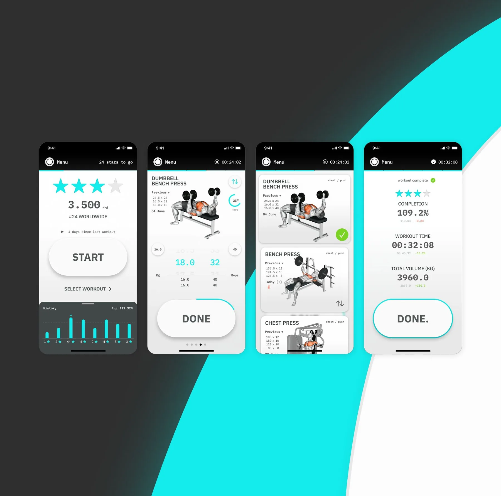
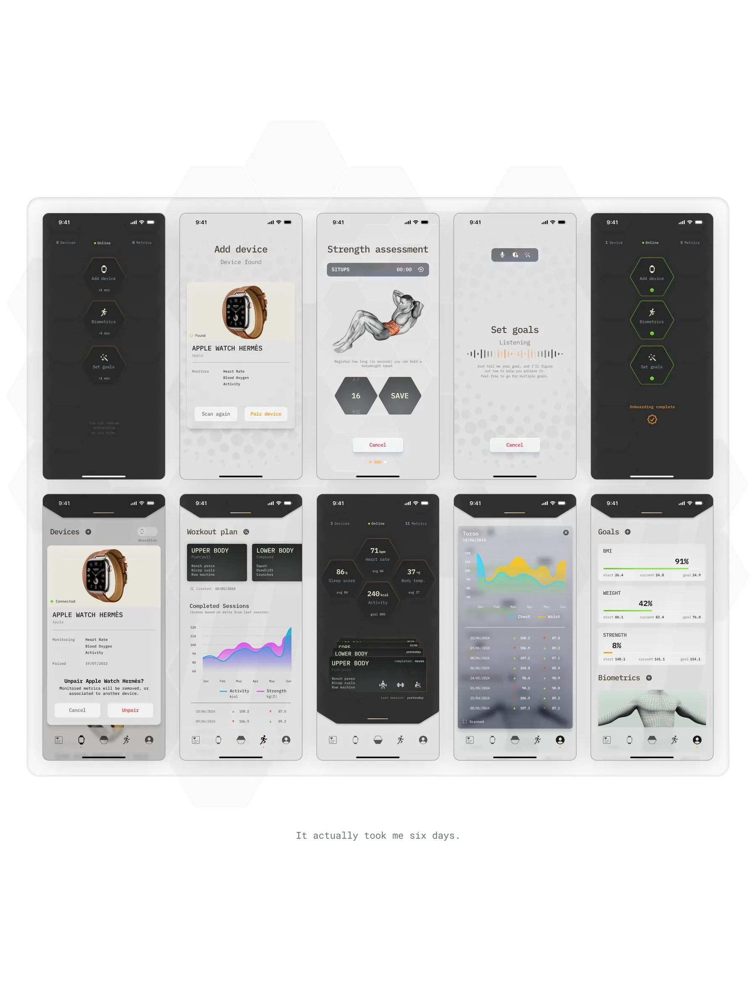

DONE is the one I keep coming back to. I co-founded it in 2018 and launched it four weeks before every gym on earth closed. I rebuilt it with a new partner and never shipped. I am building the third one now, solo, and it goes to the App Store in September.
Co-founder. Product and design across three versions, eight years. 2018 to now, London then Lisbon.
concept
Four of us, meeting after hours on the ground floor of my then employer's building: a fitness coach, two engineers, and me acting as PO. We started from an idea small enough to actually build. An app that takes DONE as its input and NEXT as its output, tells you what to do, and then gets out of the way.
That made one screen the entire product, so I designed it for the real context: one hand, mid-set, half your attention on the room. Visual information at the top, inputs down where the thumb lands, Set, Reps and Load ordered by how often each one actually changes. The inputs went through steppers and a numpad before landing on side-by-side tumblers, and a ruler picker I was fond of got cut for being fun rather than usable. Delete folded into the Reps picker as zero, because a zero-rep set is a deleted set. Swap handed you a different exercise for the same muscle group when somebody was on your machine. We tested inside a real gym, beside people who were actually training, courtesy of the coach's residency there.
It went on the App Store on the 18th of March, 2020. Every gym on earth closed the following month.
retrospective
The second life came with a new partner and a bigger idea. I kept the core intact, the single-frame workout view, the big video, the DONE button, the tumblers, and built outward from it. Wearables, so the app could read a living body instead of a form. Oura and Whoop pairing. A camera body scan. And a strength assessment to replace the self-rated fitness dropdown, which had bothered me since the first version, because self-assessment runs backwards: the fitter someone is, the lower they tend to rate themselves.
It never shipped. The easy verdict is that it got too complex, but that is not quite what happened. Everything new in it depended on somebody else saying yes: a partner's time, hardware makers' data, integrations, a body scan that never got off the ground. The parts that were mine were finished. The parts that were not are what sank it.
roadmap
So the third life goes back to the thing that shipped. The single frame, the video, the button, the tumblers, plus eight years of notes on the kinks I never got around to fixing. No partner to wait on, no integrations, no dependency I cannot resolve myself. I am building it solo, with AI covering the engineering that used to take two people.
It goes to the App Store in September 2026. It is the only thing here with no client, no brief and no deadline but mine, which is precisely why it is still alive eight years later.
DONE · 2020

DONE II · 2024
